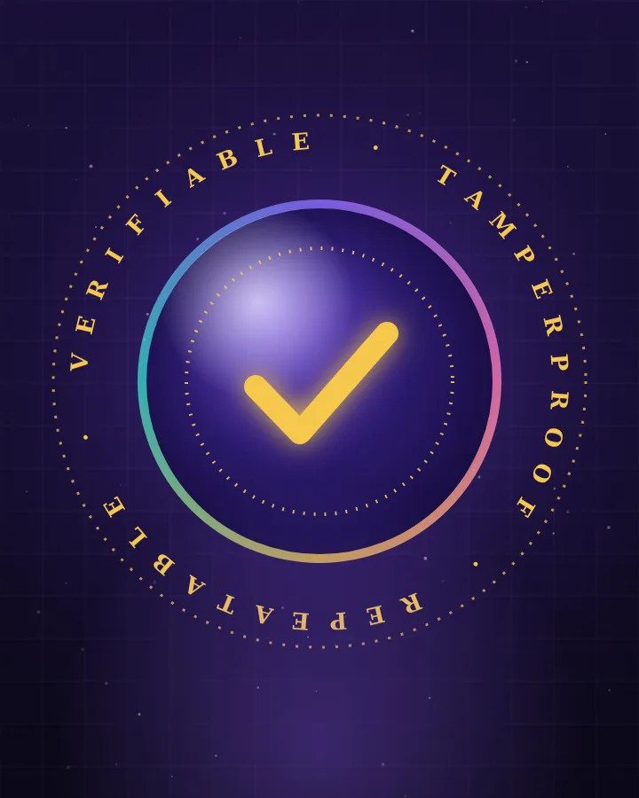
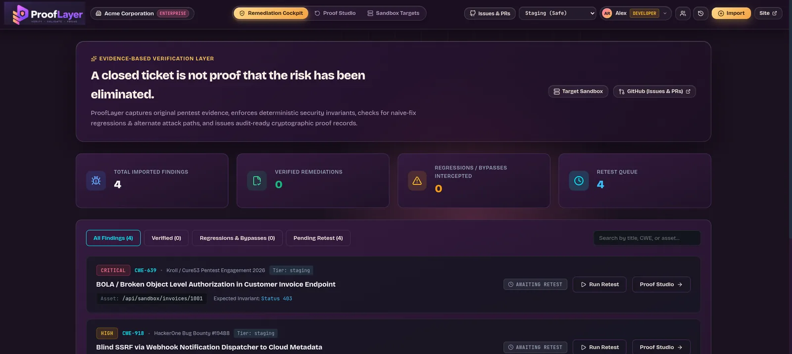
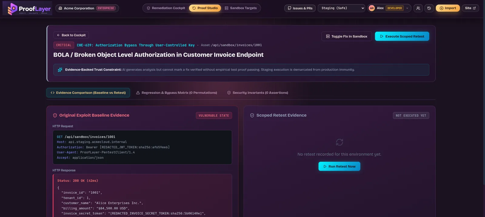

Hardened retest engine
Strict domain allowlists, http and https only, and SSRF and cloud-metadata targets blocked. Production retests need an explicit authorization token, and destructive methods are refused.

A penetration test reports 30 vulnerabilities. Developers fix them and close the tickets. But did the fixes work? A patch can stop the original attack and leave a second route open, and a scanner can go quiet without the risk going away. ProofLayer replaces “we fixed it” with something you can check.


SARIF 2.1.0, Burp Suite, or GitHub and Jira webhooks, keeping scanner version, rule ID and line ranges.
The original proof is saved with secrets and PII redacted, using deterministic hash placeholders.
Approved, scoped retests, guarded against SSRF and cloud-metadata access.
Did the patch break real workflows, or leave an alternate path open?
A cryptographically sealed proof record, verified offline from the CLI.
Strict domain allowlists, http and https only, and SSRF and cloud-metadata targets blocked. Production retests need an explicit authorization token, and destructive methods are refused.
Bearer JWTs, AWS keys, session cookies and credit cards are masked with hash placeholders, so results stay reproducible.
After the fix, ProofLayer tries HTTP verb tunneling, path normalization, header spoofing and parameter pollution.
SARIF and Burp keep rule ID, tool version, file URI and line numbers. A pull-request comment can trigger a retest and get an audit breakdown back.
One CLI command checks a proof record. A valid record exits with code 0, a tampered one with code 2.
Seven cases: redaction, scope guard, vulnerable target, naive patch, genuinely fixed target, proof integrity and the standalone CLI.
VERIFIED_REMEDIATEDThe fix holds, and every applicable assertion passed.
BYPASS_DETECTEDThe original attack fails, but an alternate path still works.
VULNERABILITY_PERSISTSThe original issue still reproduces.
FUNCTIONAL_REGRESSIONThe patch broke legitimate behavior.
INCONCLUSIVEThe test couldn’t decide, so it doesn’t guess.
Verdict, assertion coverage and conclusion confidence stay separate, so confidence in a failure is never mixed up with confidence in a fix.
Network dropouts, connection resets and 5xx crashes are marked INCONCLUSIVE. They are never assumed to be a pass.
Records hash canonical RFC 8785 JSON and verify offline. No dashboard, database or account is needed.
Every certificate carries its own limitation: it proves one test ran against one scope, not that the app has no other vulnerabilities.